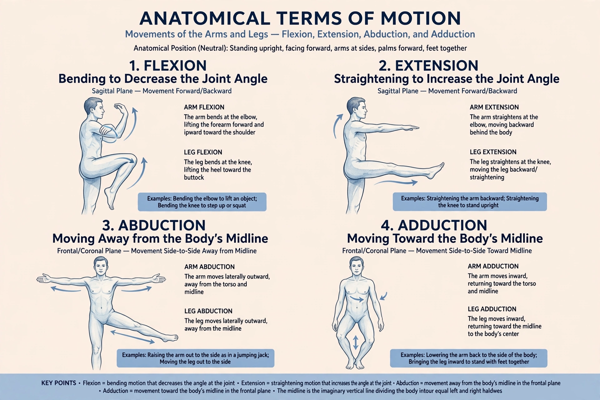

Anatomical terms of motion are the scientific terminology used to describe movements of the body and limbs, based on the anatomical position and anatomical planes.

Flexion decreases the angle between bones (bending), extension increases it (straightening). Abduction moves a limb away from the midline, adduction toward it. Rotation turns a part around its long axis, medially or laterally. Circumduction combines these in a cone-shaped movement.
These include dorsiflexion and plantarflexion of the foot, inversion and eversion, pronation and supination of the forearm, protraction and retraction, elevation and depression, and opposition of the thumb.